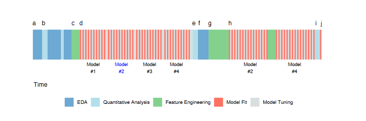

import math
from scipy.stats import t
# Given data
n1 = 100
n2 = 100
X1 = 0.50
X2 = 0.45
s1 = 0.05
s2 = 0.05Notes about Feature Engineering
Enhancing Predictive Models: A Practical Journey Through Feature Engineering - Part 1
As a Kaggle enthusiast, I have been competing in various competitions for a while now. Throughout this time, I have noticed a recurring pattern: many participants repeatedly use the same techniques without fully understanding the underlying concepts. For instance, if you look at the exploratory data analysis (EDA) in most notebooks, they are almost identical and typically performed only once at the beginning of the process. While everyone acknowledges the importance of feature engineering, most people spend their time ensembling models or combining predictions from different notebooks.
I do not want to come across as judgmental because, during my own learning process, I have likely made the same mistakes.
The purpose of this notebook, and the ones that will follow, is to provide a clear path for those who wish to deepen their understanding. In doing so, I want to express my gratitude to Max Kuhn and Kjell Johnson for their book, “Feature Engineering and Selection: A Practical Approach for Predictive Models.” This book has been an invaluable source of knowledge for me, helping me to understand the intricacies of feature engineering in a way that no other resource has.
These notebooks are akin to the class notes I’m taking while reading the book and applying its concepts. All credit goes to the authors for their work.
This endeavor has been immensely beneficial for my learning, and I hope it can help you as well.
Introduction
A wide range of predictions impact our daily lives. From predictive models to asssess the risk of loan defaults analizing borrower’s history, income, and spending patterns.
Doctors use predictive models to determine the likelihood that patients might develop certain conditions, such as predicting the risk of heart disease based on patient history and lifestyle factors.
Sports analysts use statistical models to predict player performance and game outcomes. By examining player statistics, game conditions, and historical performance, these models can forecast future performance, helping coaches make strategic decisions and fans place informed bets.
Lawyers employ statistical models to assess the likelihood of potential hiring biases in organizations, determining whether the observed hiring patterns are due to chance or indicative of a systematic problem. For instance, they might analyze how much more likely certain groups are to be hired compared to others.
Importance of Statistical Model
Models are created by taking existing data and finding a mathematical representation that fits the data.
The prediction of a particular value like the price of a house, the likelihood of a patient developing a disease, or the outcome of a sports game, reflects an estimate of the underlying relationship between the input variables and the output variable, where the goal is not understand the relationship perse, but to make accurate predictions.
In the hiring bias example, the model is thought to be inferential. The goal is to understand the state of the nature.
As this distinction can be a bit blurry, let’s consider the following example:
Imagine you are studying a company’s hiring practices and find that women are hired at a 5% lower rate than men. This 5% difference is your hiring bias estimate.
You calculate the estimated uncertainty (noise) in your data and find that the standard deviation is 1%. Standard deviation represents the variability or dispersion of the data points around the mean, which can be interpreted as the noise.
If the 5% hiring bias is compared to the 1% noise, it becomes apparent that the bias is much larger than the noise.
You might perform a statistical test to determine the likelihood that the observed 5% difference is due to random noise.
Formulate Hypotheses:
\(H_0\): There is no hiring bias (the difference in hiring rates between groups is due to random chance.
\(H_1\): There is a hiring bias (the difference in hiring rates between groups is not due to random chance).
Select a Statistical Test:
If you are comparing the means of two independent groups (e.g., hiring rates for men and women), a two-sample t-test is appropriate.
The test statistic for a two-sample t-test can be calculated using the formula \[t = \frac{\bar{X}_1 - \bar{X}_2}{\sqrt{\frac{s_1^2}{n_1} + \frac{s_2^2}{n_2}}}\]
where: - \(\bar{X}_1\) and \(\bar{X}_2\) are the sample means of the two groups. - \(s_1^2\) and \(s_2^2\) are the sample variances of the two groups. - \(n_1\) and \(n_2\) are the sample sizes of the two groups.
Using the calculated test statistic and the degrees of freedom, the p-value is found from the t-distribution.
The p-value is the probability of observing a test statistic at least as extreme as the one observed given that the null hypothesis is true. If the p-value is less than the chosen significance level (commonly 𝛼=0.05), you reject the null hypothesis.
Let’s have fun with the following example: - Sample size for men (\(n_1\)) = 100 - Sample size for women (\(n_2\)) = 100 - Hiring rate for men (\(\bar{X}_1\)) = 0.5 - Hiring rate for women (\(\bar{X}_2\)) = 0.45 - Standard deviation for men (\(s_1\)) = 0.05 - Standard deviation for women (\(s_2\)) = 0.05
Calculate the test statistic and p-value for the two-sample t-test.
# Calculate the t-statistic
numerator = X1 - X2
denominator = math.sqrt((s1**2 / n1) + (s2**2 / n2))
t_stat = numerator / denominator
print(f't-statistic: {t_stat}')t-statistic: 7.071067811865473Degrees of freedom (df) refer to the number of independent values or quantities that can vary in the analysis without breaking any constraints. It represent the number of values in the final calculation of a statistic that are free to vary. We can also say that the degrees of freedom quantify the number of independent pieces of information available to estimate another piece of information.
When calculating the mean of a sample, \(n\) values are involved. However, once the mean is known, only \(n-1\) of those values can vary freely. Similarly, when calculating the sample variance, the mean is already calculated from the sample. The degrees of freedom are \(n-1\) because the calculation of variance depends on \(n\) data points, but only \(n-1\) of them are free to vary.
# Calculate the degrees of freedom
df_numerator = ((s1**2 / n1) + (s2**2 / n2))**2
df_denominator = ((s1**2 / n1)**2 / (n1 - 1)) + ((s2**2 / n2)**2 / (n2 - 1))
df = df_numerator / df_denominator
print(f'Degrees of freedom: {df}')The calculation p_value = t.sf(abs(t_stat), df) * 2 is used to obtain the p-value for a two-tailed t-test. One-Tailed Test is used when the research hypothesis specifies a direction of the effect (e.g., Group A is greater than Group B). Two-Tailed Test is used when the research hypothesis does not specify a direction; it simply states that there is a difference (e.g., Group A is different from Group B).
# Calculate the p-value
p_value = t.sf(abs(t_stat), df) * 2 # two-tailed p-value
print(f"t-statistic: {t_stat:.4f}")
print(f"Degrees of freedom: {df:.4f}")
print(f"p-value: {p_value:.4f}")t-statistic: 7.0711
Degrees of freedom: 198.0000
p-value: 0.0000Since the p-value is less than 0.05, you reject the null hypothesis and conclude that the 5% difference in hiring rates is statistically significant and not likely due to random noise
It is possible to calculate the t-statistic directly using the scipy.stats library in Python. The scipy.stats.ttest_ind function can be used to perform a two-sample t-test, which will calculate the t-statistic and the p-value for you.
import numpy as np
from scipy.stats import ttest_ind
# Generate sample data
np.random.seed(0) # for reproducibility
sample1 = np.random.normal(loc=X1, scale=s1, size=n1)
sample2 = np.random.normal(loc=X2, scale=s2, size=n2)
# Perform the t-test
t_stat, p_value = ttest_ind(sample1, sample2)
# Print the results
print(f"t-statistic: {t_stat:.4f}")
print(f"p-value: {p_value:.4f}")t-statistic: 6.7355
p-value: 0.0000The slight differences in the results arise because the earlier example involved calculating the t-statistic using theoretical means, standard deviations, and sample sizes, while the scipy.stats.ttest_ind function was used with generated sample data in the latter example. When generating sample data, there is inherent randomness that can lead to variations in the results.
As we can observe, we are trying to understand the nature of the problem, the significance of the hiring bias following the inferential approach.
This is not a petty distinction, as later on we will see the use of inferential approach in the context of predictions to help us to indentify features.
Feature Engineering - Ways to represent predictors in a model
Now imagine you are a real estate agent and you want to have a software that can predict the price of a house based on a set of characteristic from a dataset that your company has been collecting for years. This dataset could be the Ames Housing dataset, which contains information about houses in Ames, Iowa. In our experience, we know that location is likely to be an important predictor of house price. The question that arises is which representation of location should we use in our model? One way to represent location is to use the 28 neighborhoods in Ames as predictors. A second way is to use the latitude and longitude. We also know that properties in better school districts tend to have higher prices. As proxy for school district, we can use the zip code areas as many school districts fall largely within specific zip code areas.
As we can see, the choice of representation of predictors in a model is a crucial step in the model building process. The choice of representation can have a significant impact on the model’s performance. Obviously, if the predictor has no relatioship with the outcome then its representation is irrelevant.
Be aware that there are multiple types of models, each with its own sensitivities and requirements. For example: - Multicollinearity: Some models cannot tolerate predictors that measure the same underlying quantity (i.e., multicollinearity). - Missing Values: Some models cannot handle samples with missing values. - Irrelevant Predictors: Some models are severely affected by the presence of irrelevant predictors, which can degrade their performance.
Important Concepts
There are some important theorical and practical concepts about machine learning that we need to understand.
Overfitting
Overfitting occurs when a model fits the current data very well but performs poorly on new, unseen data. This happens because the model has learned not only the underlying patterns but also the random noise present in the training data.
Highly flexible models, often referred to as “low-bias models,” are particularly prone to overfitting. These models can adapt closely to the training data, capturing both true patterns and noise.
Overfitting can also occur during feature selection. A variable might seem important in the current dataset but show no real relationship with the outcome in new data. This misleading relevance is a form of overfitting.
The risk of overfitting is especially high when the number of data points (n) is small and the number of potential predictors (p) is very large. This situation creates excessive flexibility in the model, allowing it to fit the training data too closely and detect “apparent” patterns that are actually random variations specific to the training data.
Supervised and Unsupervised Procedures - Overfitting and Self-fulfilling Predictive Prophecy
Predictive models are strictly supervised because they focus directly on finding relationships between predictors and the outcome. In contrast, unsupervised analyses include methods such as cluster analysis and principal component analysis, which are used to discover patterns in data without specific outcome variables.
Both supervised and unsupervised analyses can suffer from overfitting. However, supervised analyses are particularly prone to overfitting because they aim to predict specific outcomes. This can lead to a self-fulfilling predictive prophecy, where the analysis confirms the patterns it was set up to find, but these patterns may not hold true for new data.
Suppose an analyst uses a dataset of student grades to identify predictors of high performance, such as study hours and attendance. He finds significant associations between these predictors and high grades. The analyst also creates a heatmap using the same dataset to visualize the relationship between study hours, attendance, and grades. The heatmap shows a strong correlation, suggesting that these predictors are very important.
The risk of overfitting is quite high. While the visualization looks impressive, the strong correlation might only be valid for this particular dataset. If the model is applied to a new set of students, it might not show the same strong relationship, indicating that the model has overfitted the original data.
The “No Free Lunch” Theorem
The “No Free Lunch” Theorem (Wolpert, 1996) states that without specific knowledge of the problem or data, no single predictive model can be considered universally the best.
Many models are designed to perform well with certain data characteristics, such as handling missing values or managing collinear predictors. While it might seem logical to assume that these specialized models would outperform others in their respective areas, real-world scenarios are more complex.
Predicting the best model without examining the actual data is challenging. Therefore, the best approach is to test a variety of models to determine which one works best for your specific dataset.
Developing an Effective Model: Iterative and Heuristic Process
The development of an effective model is both iterative and heuristic in nature.
Developing an effective model involves repeating cycles of testing, evaluating, and refining. This means you build a model, test it, learn from the results, and then make improvements. This cycle is repeated multiple times until you achieve a satisfactory model.
A heuristic approach uses practical methods and experiential knowledge to guide model development. Heuristics are rules of thumb or educated guesses that help simplify the problem-solving process. While these methods might not guarantee an optimal solution, they are effective in finding good-enough solutions within a reasonable timeframe.
It is difficult to know the specific needs of any dataset prior to working with it. Therefore, it is common to evaluate and modify many approaches before finalizing a model.
Workflow

Exploratory Data Analysis
The initial activity starts with exploratory data analysis (EDA) to investigate the data (a). This involves evaluating simple summary measures and identifying predictors with strong correlations to the outcome. The process iterates between visualization and analysis until the modeler has a thorough understanding of the data.
Early Data Analysis
Following EDA, early data analysis takes place (b). This phase includes more detailed evaluations, such as summary statistics and correlations. The goal is to identify key predictors and gain deeper insights into the dataset.
Drafting Predictors
Based on the insights from previous analyses, the first draft of how predictors will be represented in the models is created (c). This draft serves as the initial feature set for model evaluation.
Model Evaluation and Hyperparameter Tuning
Multiple modeling methods are evaluated using the initial feature set (d). Many models have hyperparameters that need tuning. At this stage, four distinct models are evaluated multiple times over a set of candidate hyperparameter values.
Numerical Evaluation
Once the models have been tuned, they are numerically evaluated to understand their performance characteristics (e). Summary measures, such as model accuracy, are used to determine which models best suit the data.
Further EDA and Residual Analysis
Additional EDA is conducted on the model results, such as residual analysis (f). For example, in predicting house prices, properties that are poorly predicted are examined to identify any systematic issues. Specific areas, like certain ZIP codes, might be challenging to assess accurately.
Second Round of Feature Engineering
Another round of feature engineering is performed to address identified obstacles and improve model performance (g). This step involves refining and enhancing the predictor set based on the insights gained from residual analysis.
Model Tuning on Selected Models
By this point, the most promising models have been identified (h). A more extensive round of model tuning is conducted on these selected models to optimize their performance further.
Final Model Selection
After tuning and modifying predictor representations, the two candidate models (Model #2 and Model #4) are finalized. These models are evaluated on an external test set in a final “bake off” to determine which performs best (i). The final model is then chosen and will be used for future predictions or inferences (j).
Model Bias and Variance
Understanding bias and variance is crucial for developing effective models.
Variance refers to the degree to which data values fluctuate. In models, high variance indicates that small changes in the data can cause large changes in model parameters or structure.
Examples of Low Variance Models are linear regression, logistic regression, and partial least squares. These models are less sensitive to changes in the training data and are more stable.
Examples of High Variance Models are trees, nearest neighbor models, and neural networks. These models are more sensitive to changes in the training data and can be less stable because they rely heavily on individual data points.
Bias is the degree to which a model’s predictions deviate from the true underlying values. A model with high bias makes assumptions that may oversimplify the data and miss important patterns. For example, a biased poll could incorrectly estimate public opinion if it over-represents a particular demographic.
Low-Bias Models are flexible models that can fit a variety of patterns, such as tree-based models, support vector machines, and neural networks. Its counterpart, high-bias Models, often simpler models, may not capture complex patterns, like in the case of basic linear methods.
Models often have parameters that control their flexibility, affecting both bias and variance. In a moving average model, estimates are based on a window of data points. A small window is responsive (low bias, high variance), while a large window is smoother (high bias, low variance).
Achieving Low Bias and Low Variance
Start with a Low-Variance Model, a simple model like logistic regression, which has low variance but might have high bias. Then modify predictor variables to better represent the underlying data. This can include creating interaction terms, polynomial features, or other transformations to capture true relationships. Effective feature engineering can help a simple model like logistic regression perform comparably to a complex model by reducing bias. Uses feature selection techniques to improve models by reducing the noise from extra variables. Excess model variation can be caused by irrelevant predictors.
The goal is to achieve a model with both low bias and low variance. By understanding and managing bias and variance, you can develop models that generalize well to new data and provide reliable predictions.
Experience-Driven vs. Empirically-Driven Modeling
There is often a conflict between experience-driven modeling and empirically-driven modeling, each with its own advantages and disadvantages.
Experience-Driven Modeling is based on experts that have a good sense of what features should be included in the model based on their previous experience. Their insights allow them to prescribe specific variables and representations. The expertise of these professionals should be strongly considered in the modeling process due to their deep understanding of the domain. However, because models estimate parameters from the data, there can be a strong inclination to rely on data-driven approaches rather than solely on expert opinion. Many models can empirically determine which predictors should be included. This approach relies heavily on the data to inform decisions. The risks of this approach include overfitting to false patterns, capturing noise instead of genuine relationships. Also, empirically-driven models can become highly complex and may lack intuitive explanations, making them harder to interpret and justify.
The key is to strike a balance between both approaches. An empirical modeler can benefit from an expert’s recommendations to narrow down a large number of predictors or prioritize them in the modeling process. The process of feature engineering, which involves creating meaningful predictor variables, often requires domain expertise to ensure that the engineered features are relevant and informative.
Big Data
Big Data refers to a large number of data points (as opposed to variables). However, the effective sample size might be smaller than the actual data size due to various factors.
The effective sample size is the number of observations that effectively contribute to the estimation of model parameters. It might be smaller than the actual data size in cases such as:
Class Imbalance: When there is a severe imbalance or rare event rate, the number of useful events in the data is small.
Abundant Sampling in One Region: When a dataset has billions of records but most correspond to a specific demographic (e.g., white males within a certain age range), the diversity is low, resulting in a low number of distinct samples.
Examples:
In click-through rate prediction, out of 1,000,000 ad impressions, if only 1,000 result in clicks, the effective sample size for modeling click behavior is much smaller than the actual data size.
Additionally, another situation where large datasets probably doesn’t help is when samples are added within the mainstream of the data. Adding more samples within the well-represented part of the data (mainstream) increases the granularity without adding new information. This refers to the level of detail or precision in data representation. More data points in already well-covered areas do not necessarily enhance the analysis.
We can conclude that simply having a large volume of data does not improve analysis unless it addresses specific needs or problems. More data cannot create a meaningful relationship between variables if none exists. For example, collecting more data on shoe size and reading ability won’t reveal a meaningful relationship if they aren’t inherently related.
There’re also computational challenges related to big data. The use of high-variance/low-bias models like deep neural networks and random forests are computationally intensive. As data size increases, the time and resources required for training also increase, often in a nonlinear fashion. Also, handling large datasets often requires specialized computational techniques and infrastructure.
Ideally, the choice of model should be driven by the nature of the problem, not by the limitations of the computational resources.
Additionally, not all models can exploit large data volumes. For models like linear regression, big data tends to reduce the standard errors of parameter estimates but may not significantly improve the estimates themselves. However, there are models that can effectively leverage large data sets. Some models are designed to effectively use large amounts of data, even when some data lacks labels (unlabeled data).
Takeaways from Big Data
- Simply having a large amount of data is not valuable unless it addresses a specific need or problem.
- Consider if the sheer volume of data introduces practical challenges in storage, processing, and analysis.
- There is almost never a single model fit or feature set that will immediately solve the problem. The process involves trial and error to achieve the best results.
- The effect of feature sets can be much larger than the effect of different models. The interplay between models and features is complex and somewhat unpredictable.
Feature Selection
As we’ve already seen, feature selection is a critical step in improving the performance of a model by identifying and using the most relevant features.
The correct approach through feature engineering is by creating Features in stages. For example, you might start with basic features like age and income, then add more complex features such as age squared or income-to-debt ratio.
After each set of new features is added, the model is evaluated using resampling techniques (cross-validation) to ensure robustness and avoid reliance on a single train-test split.
When features are not pre-screened for statistical significance, there’s a risk that some of the added features might fit the noise in the training data rather than true patterns. Techniques like forward selection, backward elimination, and various statistical tests (e.g., t-tests, chi-square tests) are used to evaluate the importance of each feature.
There are different strategies for supervised feature selection. We can classify them by how subsets of features are derived:
Wrapper Methods: These use an external search procedure to choose different subsets of the whole predictor set for model evaluation. Examples include backward selection, stepwise selection, and genetic algorithms.
Embedded Methods: Feature selection occurs naturally during model fitting. For example, in a decision tree, variables are selected during splits, and those not used are effectively excluded.
The risk of overfitting is particularly high when wrapper methods are used, especially if the number of data points is small relative to the number of predictors.
Unsupervised selection methods can significantly improve model performance.
Notice that when searching for a subset of variables, there may not be a unique set that produces the best performance. Often, when an important variable is removed, the model compensates by adjusting the remaining variables. This is especially true when there is correlation between explanatory variables or when using low-bias models. for this reason, feature selection should not be used as a formal method for determining feature significance. Traditional inferential statistical approaches are better for assessing the contribution of a predictor to the underlying model or dataset.